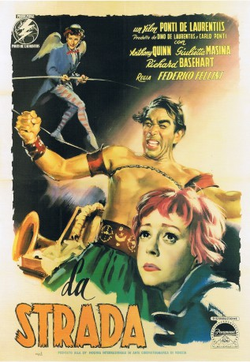

#9080 Das Lied der Straße
Alternativ: La Strada (Englischer Titel)
Auszeichnungen: 1 Oscars gewonnen für 1 Oscars nominiert
 
 IMDB-Wertung: 8.1 / 10
IMDB-Wertung: 8.1 / 10  Metascore: 0
Metascore: 0 
Sad story of a waif, Gelsomina, who is sold by her mother to Zampano for 10,000 lire and a few kilos of food. Zampano is a traveling showman who exhibits feats of strength by breaking a chain wrapped around his chest. He performs in village squares and then passes the hat for whatever the normally small crowd is prepared to give. He teaches Gelsomina a drum roll as part of his introduction. He doesn't treat her well and when she tries to run away, he beats her. They eventually join a small traveling circus where they meet a tight-rope walker who convinces Gelsomina to question her choices.
Jahr: 1954
Dauer: 107 Minuten
FSK: 16
Land: Italien Studio: Constantin FilmTonspuren:
Untertitel: Deutsch,
Auflösung: 1080p (1440x1080) Größe: 7833 MB
Genre: Drama
Regisseur: Federico Fellini
Drehbuch: Federico Fellini
Soundtrack: Nino Rota
Darsteller:
 Anthony Quinn als Zampanò
Anthony Quinn als Zampanò- Giulietta Masina als Gelsomina
 Richard Basehart als The Fool
Richard Basehart als The Fool- Mario Passante als Waiter (uncredited)
- Goffredo Unger als Man Restraining Zampano from Attacking (uncredited)
- Aldo Silvani als Giraffa
- Marcella Rovere als Widow
- Livia Venturini als Nun
- Pietro Ceccarelli als Bartender (uncredited)
- Giovanna Galli als Prostitute (uncredited)
- Gustavo Giorgi als (uncredited)
- Yami Kamadeva als Prostitute (uncredited)
- Anna Primula als Gelsomina's Mother (uncredited)
- Nazzareno Zamperla als Man Restraining Zampano from Attacking (uncredited)
Datei: X:\1950-1959\Lied der Straße, Das (1954, FSK16, 1440x1080).mkv seit 19.07.2018
Festplatte: HD 1900-1970
 Es gibt insgesamt 141 Filme in der Gruppe '1950-1959'
Es gibt insgesamt 141 Filme in der Gruppe '1950-1959'